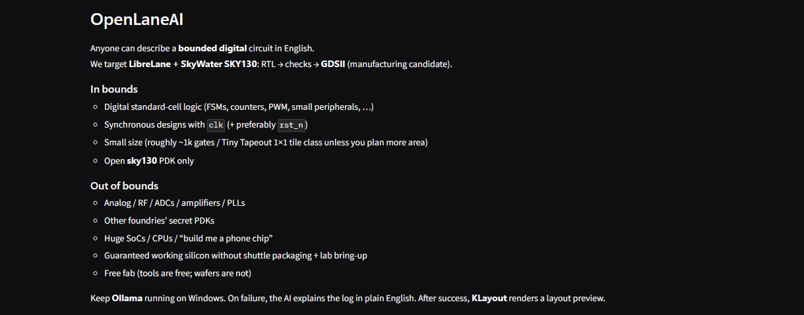
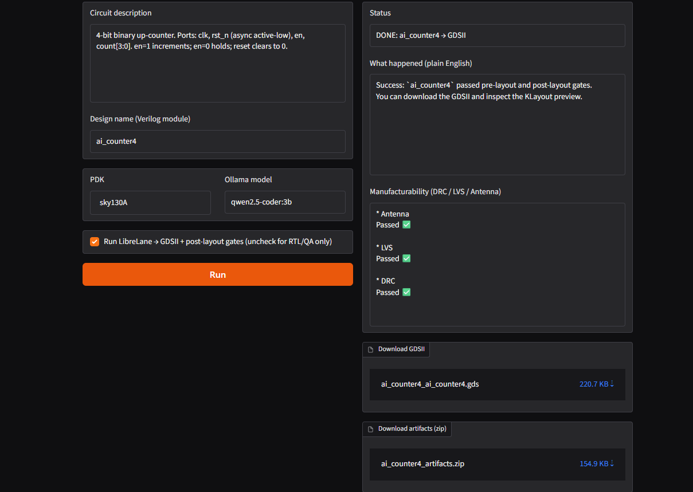
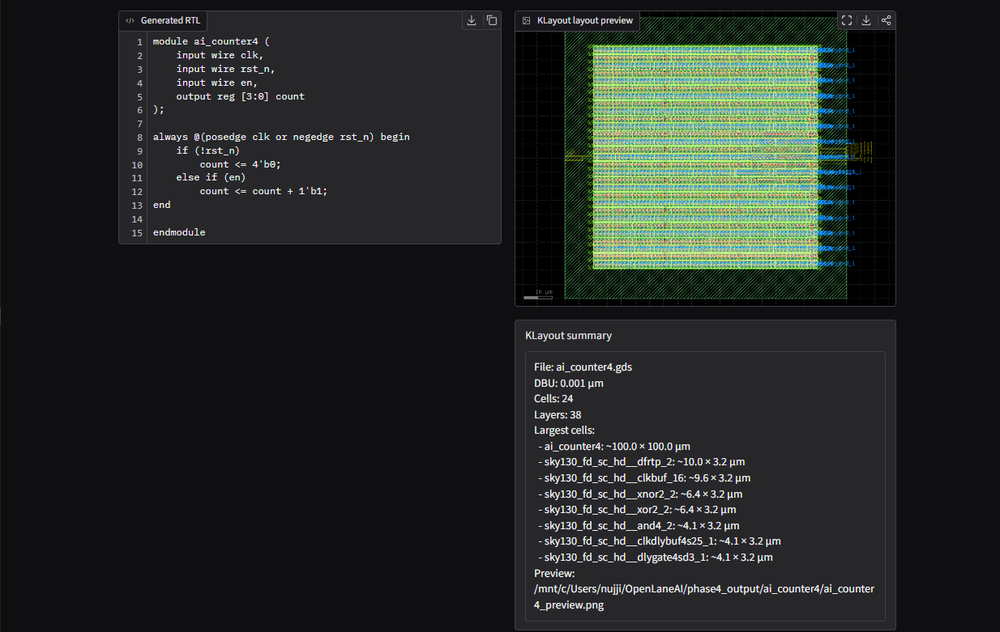
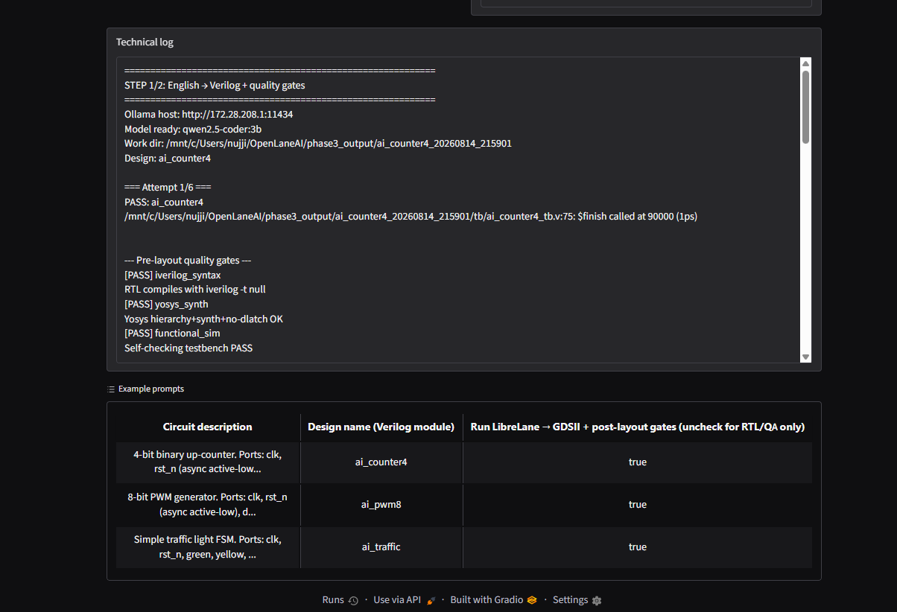

OpenLaneAI
OpenLaneAI is an experiment: type a plain-English description of a small digital circuit, and the tool tries to produce Verilog, run automated checks, and push the design through LibreLane on the open SkyWater 130 nm process until a GDSII layout comes out. The screenshots below are from a successful demo of a four-bit counter.
It is still early. This is a proof of concept, not a finished or practical way to tape out real chips. It only aims at tiny, clocked digital blocks on sky130. Anything analog, RF, mixed-signal, proprietary foundries, or large SoCs is out of scope. Even when the flow “passes,” the result is a candidate layout—not guaranteed working silicon.




What makes this hard
Getting from words to layout is not one step. The RTL has to compile, synthesize without accidental latches, and survive a self-checking simulation. Then place-and-route has to finish, and DRC, LVS, antenna, and timing checks all have to clear. Small mistakes in the prompt, the generated code, the pin list, or the floorplan can fail late and for opaque reasons. Tooling spans Docker, a PDK install, simulators, synthesis, and layout viewers—each with its own failure modes. A demo that works on a counter does not mean the same path is reliable for something useful.
Why people still matter
Building this flow made the limits obvious. Automated gates catch many broken designs, but they do not know whether the English description matched the intent, whether the I/O will plug into a real shuttle wrapper, or whether the part will behave once it is packaged and powered. Timing reports, DRC waivers, die area, and pin planning still need judgment. OpenLaneAI is useful as a way to explore that pipeline and to show how far automation can go on a toy block—and, more importantly, how much human involvement ASIC design still requires before anything should be trusted near a fab.